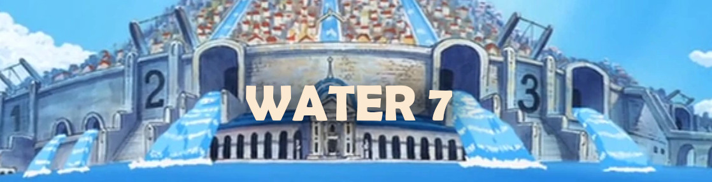
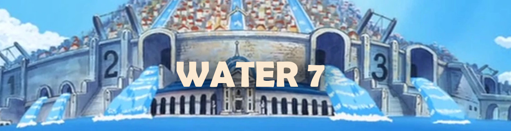

Water 7 é a quarta saga de One Piece, conhecia também por Saga Enies Lobby ou Saga CP9. Desta vez, os piratas já estão em mar aberto novamente e irão enfrentar alguns perigos em sua empreitada na busca do One Piece. Um deles é o trapaceiro Foxy, além de um dos três Mirantes da Marinha, chamado Aokiji. Luffy precisa chegar a Water 7 para encontrar um carpinteiro que se junte a sua tripulação e conserte seu navio.